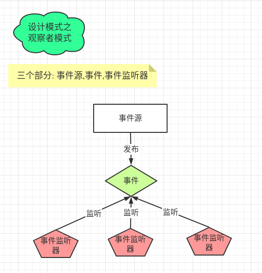

Java设计模式, 眼观六路，耳听八方，观察者很忙，随时监控着关注对象的一举一动。观察者模式解决了基于一对多对象结构关系间的互动问题，使观察者（多方买家）专主动为被动，被观察者（单方商家）转被动为主动，此情此景，需动静结合，先后有序，以【一方动多方静】取代【多方动一方静】的模式，大大的提高了沟通效率。
先来看个图:

观察者模式的中的三个基本部分: 事件源 / 事件 / 时间监听器
定义事件接口 1 2 3 4 5 6 7 8 9 10 11 public interface EventSource void event (String arg) }
事件接口实现
初始化监听器容器
增加监听器
移除监听器
发布事件
1 2 3 4 5 6 7 8 9 10 11 12 13 14 15 16 17 18 19 20 21 public class EventSourceImpl private List<EventSource> eventSources = new ArrayList<>(); public void addListener (EventSource event) eventSources.add(event); } public void removeListener (EventSource event) eventSources.remove(event); } public void notifyEvent (String things) for (EventSource e : eventSources) { e.event(things); } } }
事件监听器A 事件监听器需要实现接口并重新对应的方法,这样就可以在事件发布时,监听器根据自己的需求去自定义执行
1 2 3 4 5 6 7 public class ListenerA implements EventSource @Override public void event (String arg) System.out.println("监听器A事件触发 arg = " + arg); } }
事件监听器B 1 2 3 4 5 6 public class ListenerB implements EventSource @Override public void event (String arg) System.out.println("事件监听器B触发 arg = " + arg); } }
测试 1 2 3 4 5 6 7 8 9 10 11 12 13 14 15 16 17 public class EventTestMain public static void main (String[] args) EventSourceImpl eventSource = new EventSourceImpl(); ListenerA a = new ListenerA(); ListenerB b = new ListenerB(); eventSource.addListener(a); eventSource.addListener(b); eventSource.notifyEvent("发布事件A" ); eventSource.removeListener(b); eventSource.notifyEvent("发布事件B" ); } }
Spring中的使用 持续更新…

Copyright 2021 sunfy.top ALL Rights Reserved